(PLEASE READ THE INTRO TO GODOT PAGE FIRST)
Once you have created your project and you are familiar with the Godot Engine layout we can make
a simple game where you can walk around, jump, and collect coins. It will be very simple so that you can get the
idea of how to do simple things in Godot.
Creating the Player
The first thing we need to do is create a player. Because you are probably a begginer, We will be using the default
player script. Lets create the player scene now. Select OTHER NODE in the object tree.
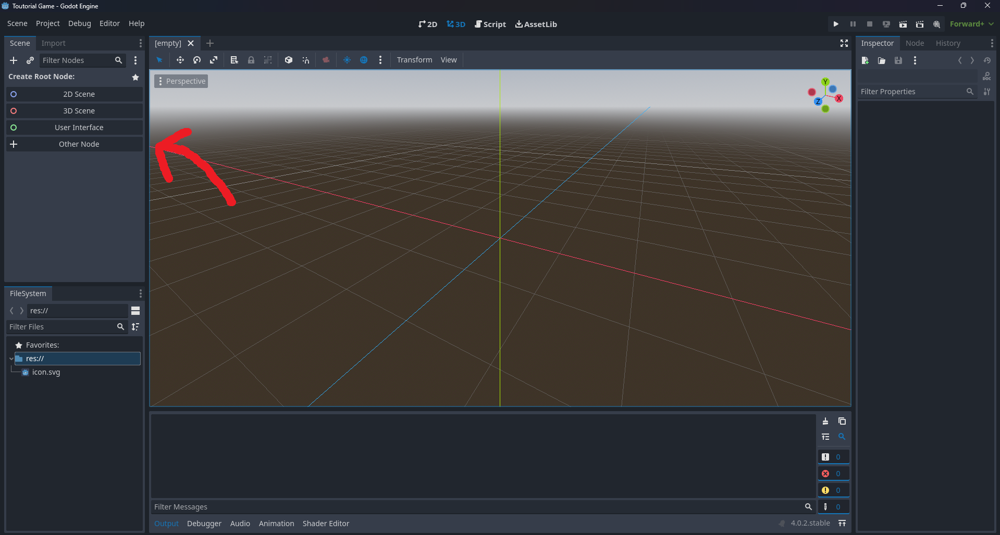
Once you select that, this screen should pop up.
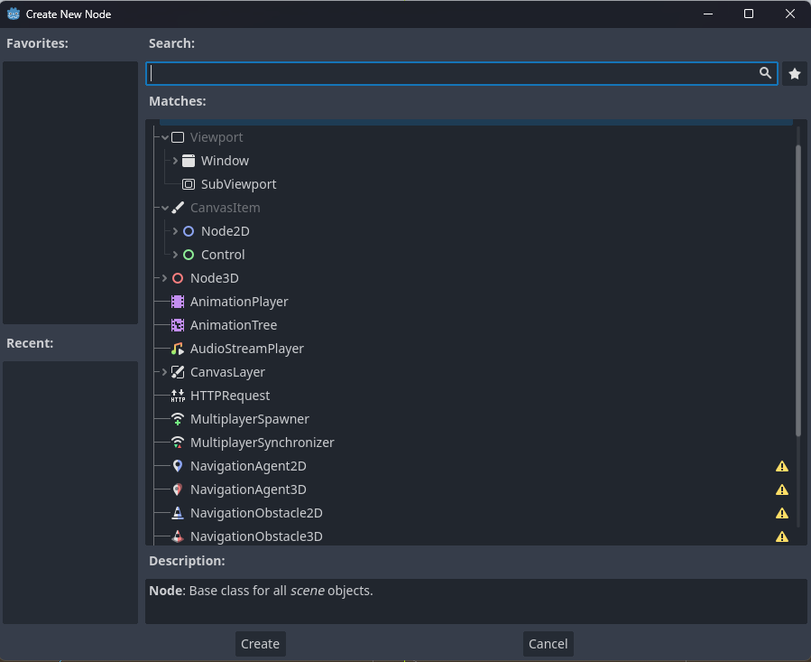
This is where you choose what kind of object you want to create.
In Godot, we do this with nodes. Nodes are the building blocks of games in Godot. Because we are doing a player we will
use the CharacterBody3D node. To find it, search for it in the search bar and it should pop up. MAKE SURE ITS 3D AND NOT 2D.
Once you do that you should see the CharacterBody3D node in the object tree. You should now rename your CharacterBody3D
to Player by double clicking it to make it more clear.
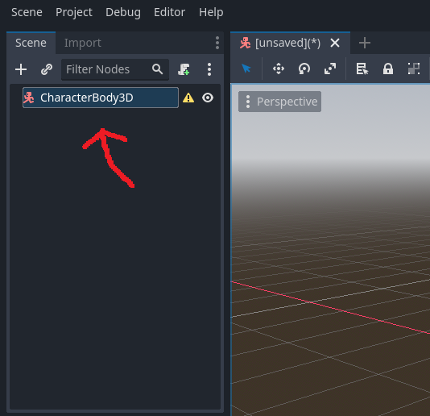
Now you should save the scene. You can save it by right-clicking on the scene that indicates is is not saved and selecting SAVE SCENE. This screen should now pop up.
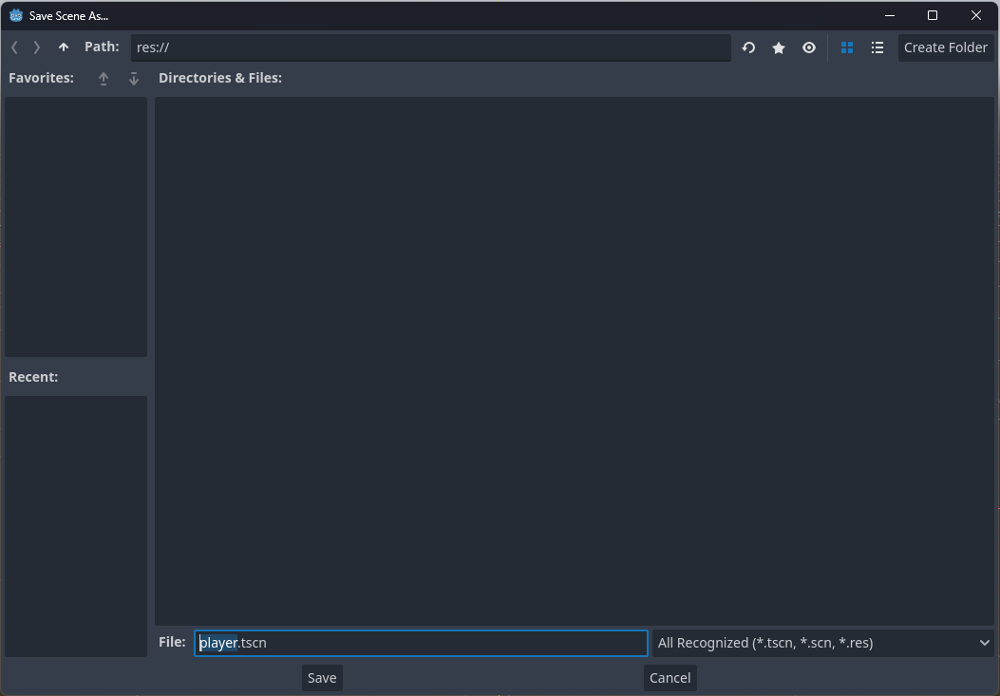
This is where you will name your scene and also where you want to save it in your file system. But we currently
dont have any other items in the file-system so just name your scene in the FILE box at the bottom of the window. You can name this whatever you want but I reccomend "player"
and click SAVE. Your scenes are now saved. Now some of you are wondering why we are making the player a seperate scene and not
making it inside a scene with a level. Well in godot we have something called "Scene Instancing."
Scene Instancing is a way to orginize your game better and more efficiently. Instead of making a bunch of coins in a level scene, you would make
a coin scene with a single coin and make a Level scene and then put the coin scene inside of the level scene. Its okay if that is a little confusing we will get
more into that a bit later. Now lets finish up the player. Now as you can see we have no player object, so lets add one now.
To add one right click on the Player node.
A drop down menu should pop up and then select ADD CHILD NODE, this will add a child node the player. Now the same window from before will pop up.
This time we want a MeshInstance3D. A MeshInstance3D is 3D shape that is very commanly used.
Once you add it you will notice no shape. To add a shape go the Inspector and click MESH dropdown.
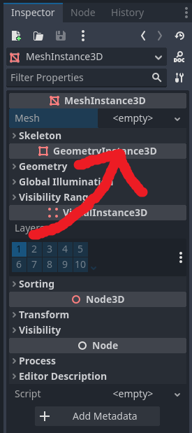
Then a drop down will be displayed and you will see a bunch of different shapes. Select the capsule mesh.
You should now have a bean in you scene. But we need collision so the player doesnt fall through the floor.
To do this click MESH option at the top of the scene display.
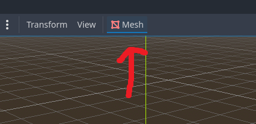
Then a dropdown will be displayed, select CREATE SIMPLIFIED CONVEX COLLISION SIBLING.
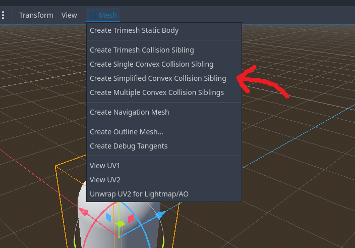
You now have collision for the player. Now we have to get to scripting.
Scripting the Player
You can create a script in multiple different ways. But we are just going to add the script by selecting the player and
clicking on the add script icon,
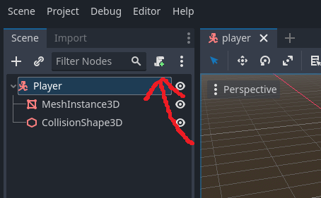
Now this screen should pop up,
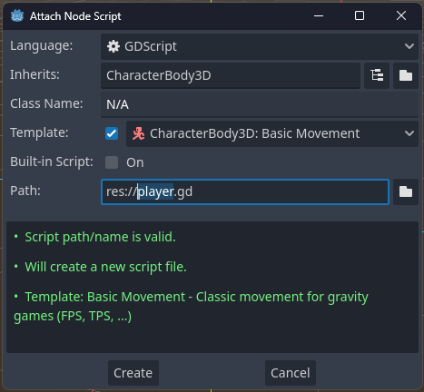
The LANGUGE option at the top is set to GDscript and thats what we will be using. the INHERITS option is what the script
will be based off of and in our case its the CharacterBody3D. Built in script will be off and it just makes it so the
script is built in, thats it. Under that is the PATH and that is where you want to store your script in the file-system.
And then there is TEMPLATE which is the CharacterBody3D template which we will be using. We dont need to change anything
unless you want to change the name of the script. Click create and this should now pop up.
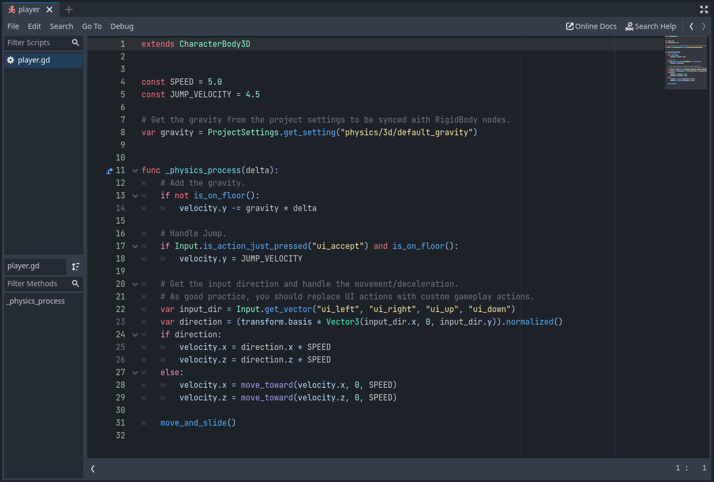
This is GDscript, it is very similar to python and C#. We will not be going into depth with scripting now but
we will later when we make the coins.
The two top parts of the script are the players speed and jump velocity. They have CONST at the beggining
which means the value cant be changed. Below that is the gravity, it has VAR at the beggining which means it can be
changed later on in the code. This code is a bit more complex so I wont go much into it but we will be scripting a little later.
Now we must create the level.
Creating the Level
To start creating the level we are going to create a new scene. To do that click the plus icon by the player scene.
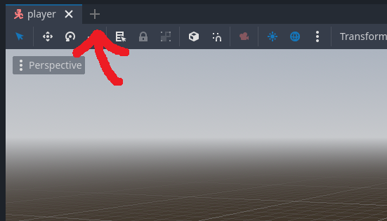
And this time we are going to be using a 3D Node. A 3D Node is just a base 3D node. Think of it kinda like a folder for 3D Objects.
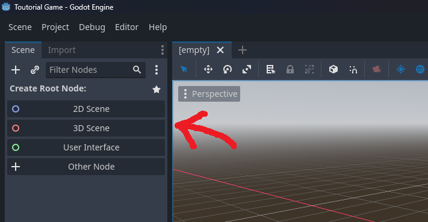
Now rename the Node 3D just like you renamed the player (double clicking) then call it "Level."
Now save the scene and we can now get to building the level. The first thing we need is a floor,
to do that we will add a MeshInstance3D with a PLANE MESH. You can also rename it if you want.
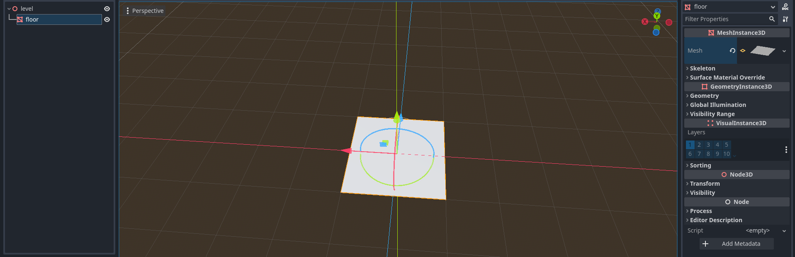
Now we should scale it up to make it larger. To do that click on the scale tool.
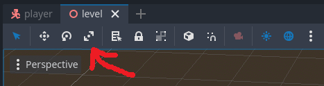
And now drag the cubes to scale the plane.
Now we should add a material so it looks a bit more like grass. To do that click on the MESH dropdown in the Inspector.
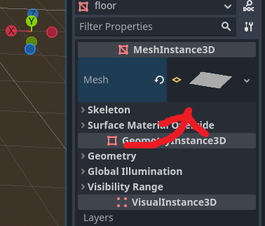
Now click on the Material dropdown
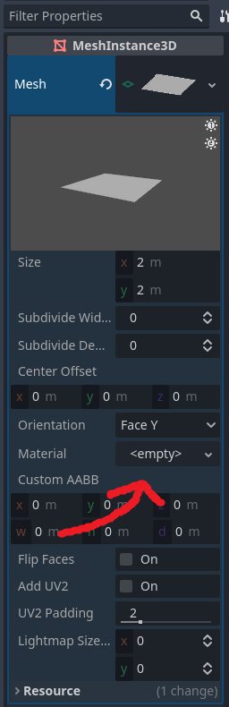
Now click New Standerd Material 3D. Now click on the Albedo option then COLOR and change the color to what ever you like.
Now we should add the collision. We will do it the same way we did it last time, click on the mesh icon and then click
Create Trimesh Static Body. Now lets add the player scene to the level scene. Go to your file system and drag the player scene into the object tree.
Move it around so it is sitting above the floor. Now we can test our player movement out. Click on the run option at the top of the screen.
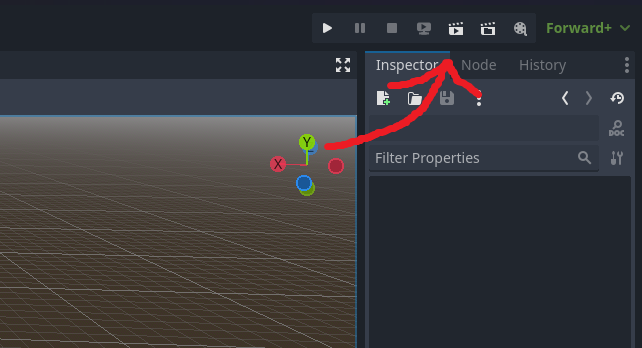
But when you run it you cant see anything. To fix that we need camera and lighting. To add a camera add a node to the level scene
and search for Camera3D. When you add it move it back and up a little so you can see the entire floor. But you will notice
when you run it its very dark. To add light to the level click on the three dots icon and click "Add Enviorment To Scene" and "Add Sun To Scene."
You can now run around on a platform with lighting. Now we need to make and script the coins.
Creating the Coins
To start making the coins we are going to create a new scene and then selecting OTHER NODE like before.
And then adding a MeshInstance3D to the scene and giving it a Sphere mesh and also shrinking it down a bit.
Now rename the MeshInstance3D to "coin" and save the scene like you did with the level and player scene. Also give the sphere a yellow color like we did with the grass.
Now we are going to add an Area3D Node. An Area3D Node is very good at detecting collision and is what we are going to
use for detecting the player toutching the coin. Add a child Node to the coin mesh and search for Area3D and then add it.
But we also need to add a CollisionShape3D as a child of the Area3D so we can difine the collisons shape. So add a
child to the Area3D node and search for CollisionShape3D and add it.
Then click the SHAPE dropdown
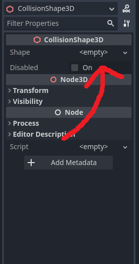
and selecting New Box Shape3D.
Now you have a collision detection but now we need to create a script for the coin. Do that and name it "coin" and make sure the TEMPLATE is Node: Default.
Now we need to refrence the collisoin. To do that we will use @onready which will access the object when the scene runs.
So at the top of the code below where it says extends, write @onready. Now we need to create a variable to store the object,
so after @onready type var. Now name the variable "collision" and make sure to type by the "var". Now type "=" so we now can define the value of the variable
and drag the Area3D node from the object tree to the "=" and you now have a access to the Node.
Now delete the ready and proccess functions. Your script should now look like this.
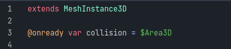
Now under the variable we are going to create a physics proccess function. A physics proccess function is a function that runs every frame. In order
to create one first type in func, and then type out _physics proccess and it should pop up as one of the options. Now hit enter and you will see
that is will autamaticly indent the code. If you are ever writing code inside an func, if, for, ect. Then make sure it is indented under that line of code.
Now we need to check if the player is toutching the coin using collision. To do that we will use a if statement.
An if statement checks if a certain statement is true. Stuff like if a variable has the value of 5 or something like that.
We will use it to check if the collider is toutching the player. To do that type if inside of the physics proccess so it checks it every frame.
Now we will type the variable we declared later. So type the name (I named mine collision) and then type a dot.
We type a dot to access an objects properties. So we are typing a dot by the collision variable name to access the
collisions properties. Now we are going to type a function that is only for Area3D's. has_overlapping_bodies.
has_overlapping_bodies is function that checks if the Area3D is overlapping with a collisoin body, which our player has.
Now type a collan. We use a collan after any if, func, for, ect. Now hit enter. Remember if you are typing inside of any statement make sure it is indented below it.
Now we want the coin to hide so just type "hide()" which will hide the object.
This is what your code should look like.
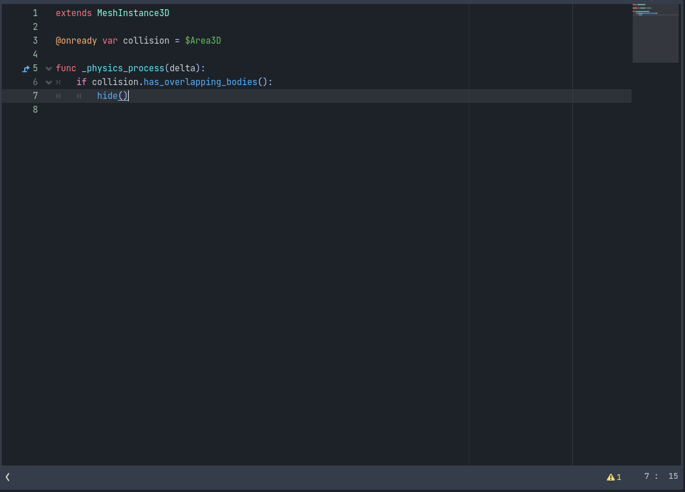
Now that we have a working script we need to put the coins into the level scene. You probably remember but the coin scene should be dragged into the level scene.
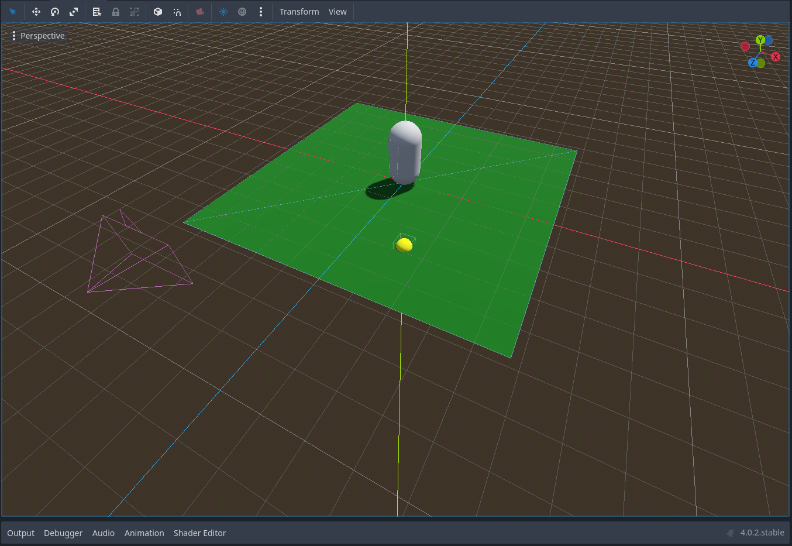
Make sure you move the coin above the floor and duplicate multiple of them around and boom you made a game. Now this game is very bare bones and only
utilizes just a little the Godot Engine has to offer. But those simple things you just learned will be used and will help you even after you learn more complex
functionalities. But thats it for a (very) simple game to get started.